Записи дроу, покинувшей подземье
У меня снова ничего не вышло. Сколько бы я ни старалась, результата так и нет.
Мать была в ярости, кричала, что я ничтожество и недостойна нашей фамилии.
Меня снова наказали. Не думаю, что эти пытки помогут мне постичь магию, но кому какое дело?
Зачем было рожать меня, когда у тебя уже есть три идеальных дочери?
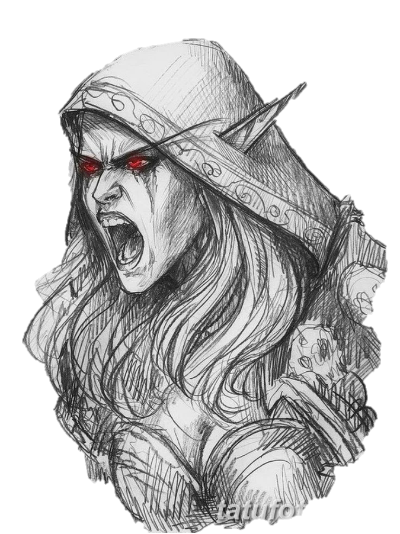
Я всегда любила всё разбирать и смотреть на механизмы, но сегодня мне в руки попалась тонкая шпилька. Поразительно как легко я смогла открыть замок и выбраться из заточения комнаты, будто я занималась этим всю жизнь.
Я хочу вскрыть все двери. Наконец-то я чувствую свободу и могу перемещаться по дому. Главное не попадаться никому на глаза и вернуться под замок до того как меня начнут искать….
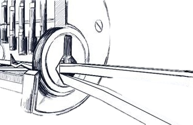
Я восхищаюсь своими сестрами и в то же время их ненавижу. Вокруг них витает аура силы и власти. Они конечно пока слабее матери, но лет через 200 кто-то из них станет главой нашего дома, выстлав себе путь трупами родственников.
Они вмешиваются в моё обучение не для того, чтобы помочь, а просто, чтобы найти лишний повод для наказания и демонстрации своего превосходства.
Я и без этого знаю своё место.
Лучше бы они меня просто игнорировали…
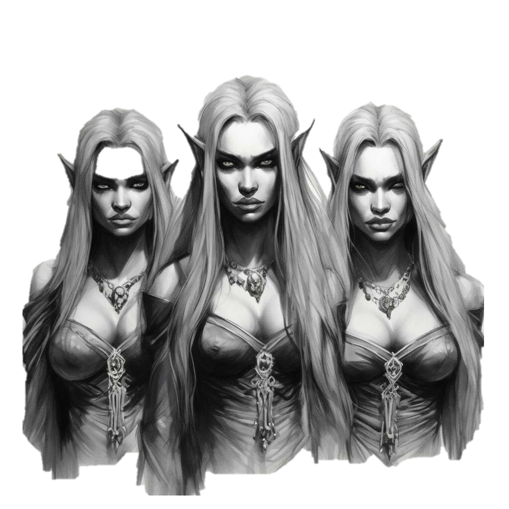
Обстановка в доме в последнее время всё сильнее накаляется, а давление на меня растет. Я чувствую себя пленницей увязшей в паутине Ллос и задыхаюсь в присутствии матери и сестер. Скоро моё совершеннолетие и я могу его не пережить.
Мне нужно сбежать. Я уже изучила маршруты по которым можно выбраться из города, но что ждет меня за его пределами мне неизвестно.
Лучше я умру попытавшись хоть что-то изменить, чем смирюсь с тем что меня ожидает в стенах дома.
Поверить не могу, что у меня получилось!
Поверхность шокирующее контрастна, от буйства красок кружится голова. Солнце такое яркое, что обжигает кожу, а глазам становится больно. Это отличается от родных полумрака и прохлады подземья.
Я чувствую облегчение, возможно это та самая свобода из моих мечт, я могу быть просто собой, вне тени сестер и строгих правил.
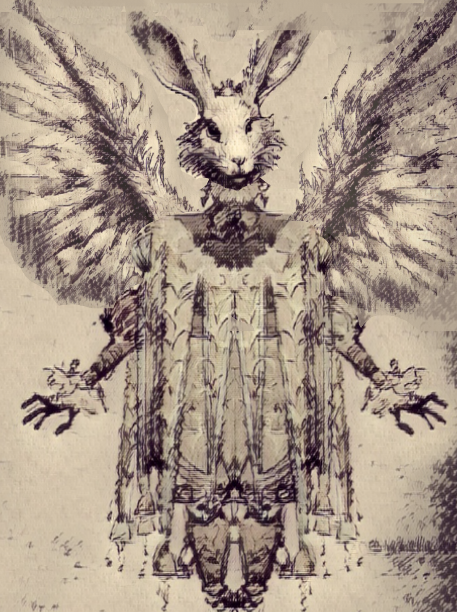
От укуса мохнатой твари болит рука. Хорошо, что я её убила, плохо, что я теперь теряю силы… Если выживу никакой больше пощады! Сначала убей, потом разбирайся что это было!
Появившееся существо не похоже ни на что, что я встречала или могла себе представить до этого… Благо, оно оказалось не агрессивным, ведь дать отпор я бы ему уже не смогла. Оно было настолько нереальным, ято я бы скорее сочла это видением просто сном или галлюцинациями, если бы не подвеска оставшаяся у меня от него.
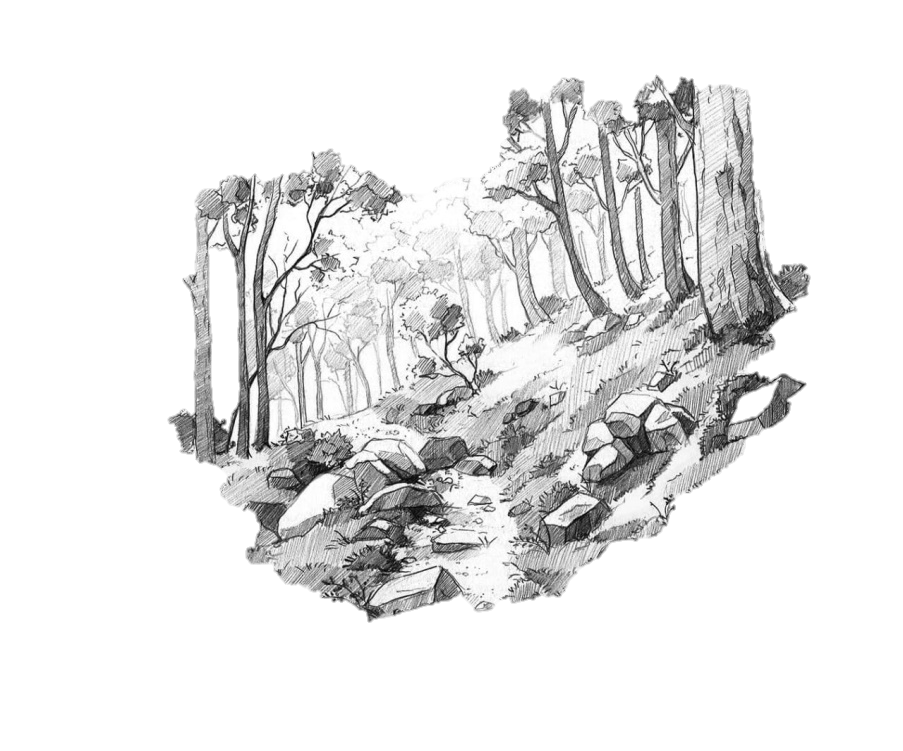
Здесь всё и слишком странное. Даже земля отличается. Звуки, запахи, текстуры. Столько нового, что, кажется, будто мозг расплавится от перегрузки. Мне потребуется много времени, чтобы изучить этот мир и привыкнуть к нему.
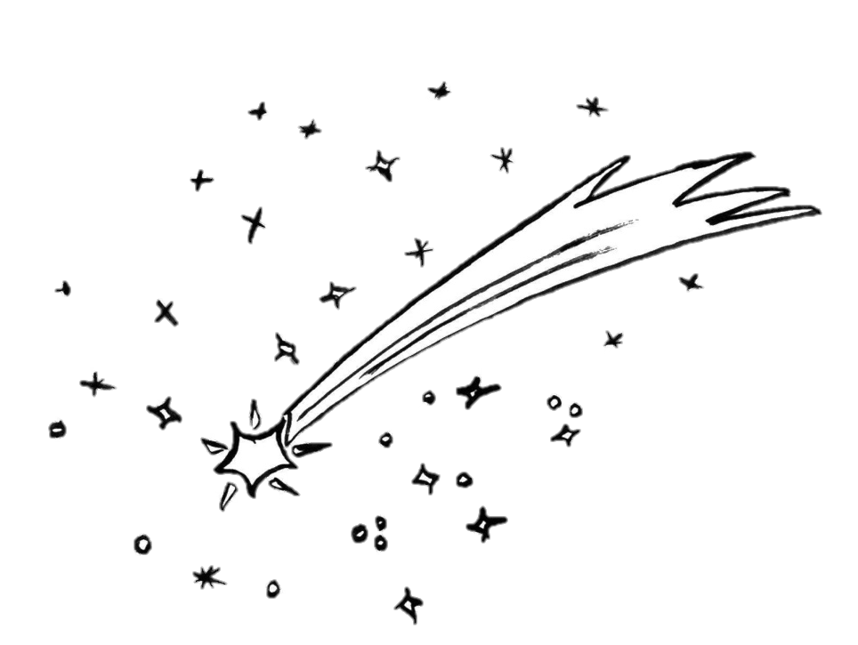
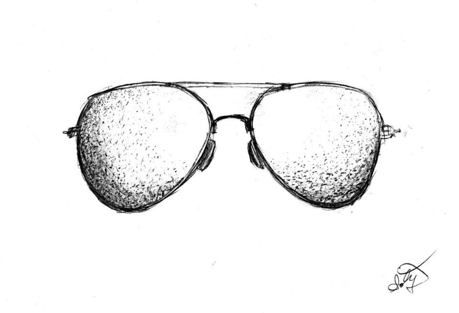
Ночь мне определенно нравится больше.
Она приносит с собой привычные прохладу и сумрак, глаза наконец-то могут отдохнуть от яркого света, а я расслабиться (насколько это возможно).
На небосклоне творится волшебство, всё усеяно мерцающими огнями. Мне не хватит и 100 лет чтобы сосчитать их все.
Хочу любоваться ими до конца жизни. Никогда не вернусь обратно в подземье.
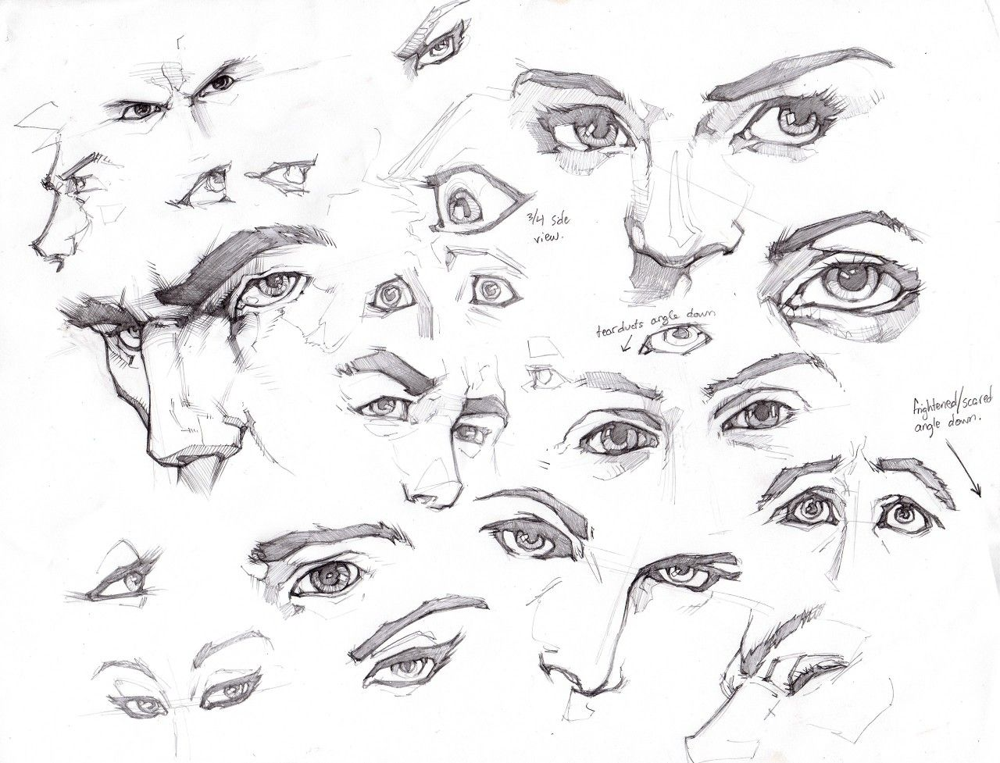
Я попала на рынок. Люди просто болтают друг с другом, обмениваясь шутками. Мир этих существ наполнен чем-то отличным от того, что было в подземье. Радость? Беззаботность?
Я бы на их месте так не расслаблялась. Ведь за это можно поплатиться. Прямо как торговец, у которого я безвозвратно позаимствовала очки с темными стеклами. Этот удивительный предмет защищает мои глаза от солнца. Это мой билет в дневной мир, где я смогу видеть всё без боли.
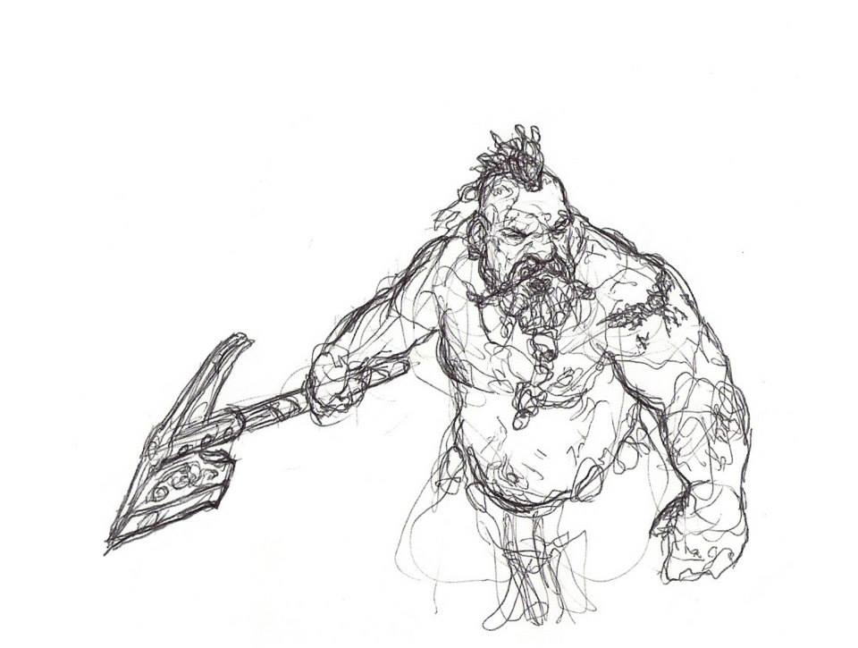
Большинство местных реагирует на меня с осторожностью. Косые взгляды, недоверчивые лица. Ощущение что все постоянно пялятся на меня. Раздражает.
Понимаю их недоверие. Судя по ходящим тут о дроу легендам, такими как я пугают непослушных детей. Впрочем, большинство их стереотипов правдивы. Ха.
И всё-таки меня опасаются не все. Некоторые даже проявляют любопытство и даже пытаются со мной поговорить. Жаль. Внушать страх мне нравится больше. кажется я начинаю понимать своих сестер, но быть по ту сторону страха намного приятнее.
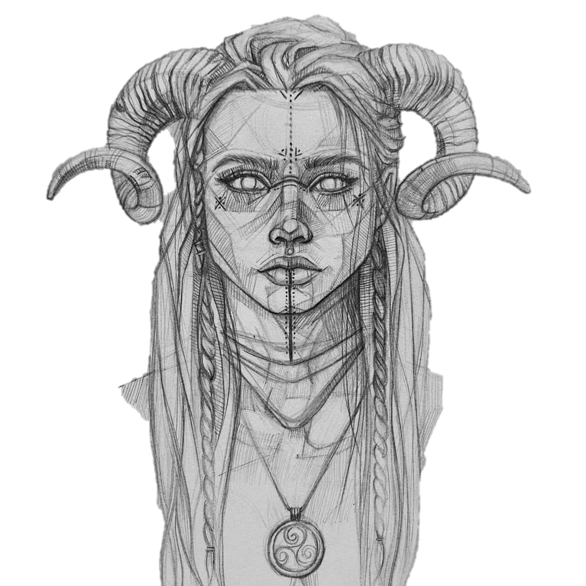
Разнообразие рас поверхности поражает. Разные цвета кожи, волос, формах тела и лиц. Просто вау.
Дварфы похожи на Дуэргаров. Интересно, похожи ли мы также с поверхностными эльфами? Если да, то мы вряд ли найдем общий язык.
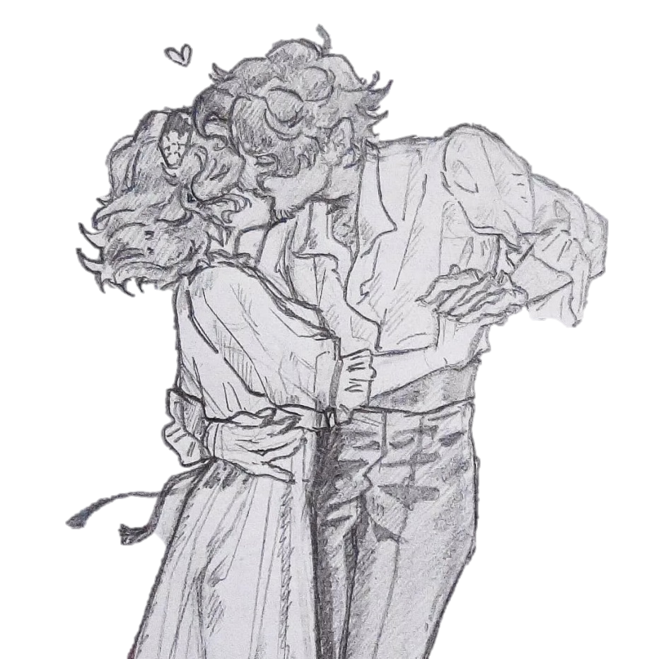
Впервые встречаю существо другой расы, что столь же красиво внешне, как и я.
Она идеальна. Даже наличие рогов и хвоста ничуть её не портит. Единственное что мне в ней не нравится это страх в её глазах, когда я подхожу ближе. Странно, обычно страх других доставляет мне удовольствие, но в случае с ней всё наоборот.
Она как звездное небо, которым хочется любоваться до конца жизни.
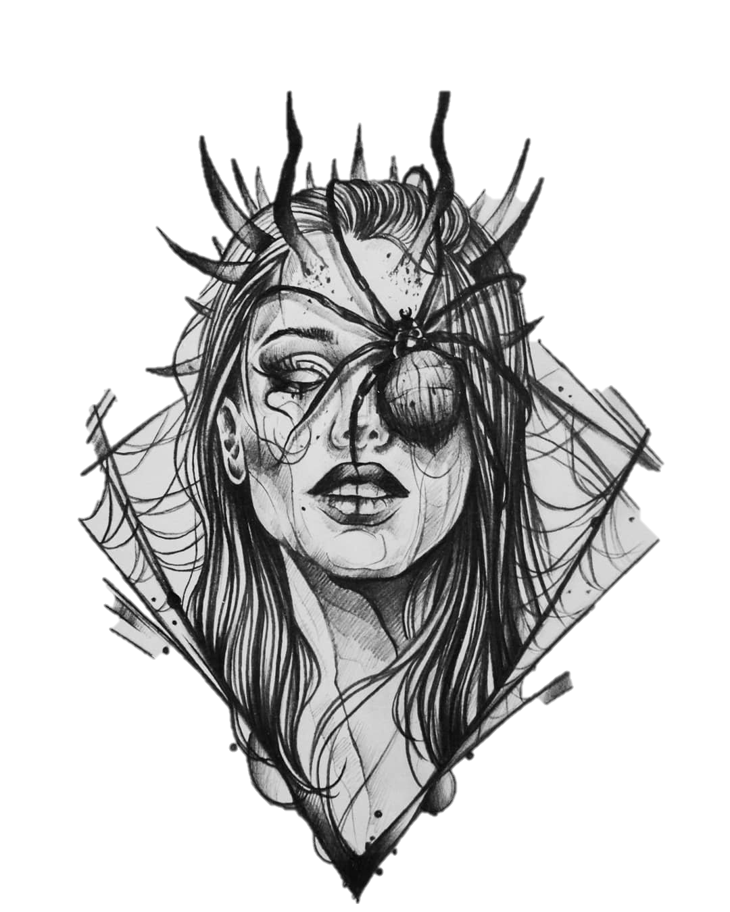
Отношения жителей поверхности такие сложные. В подземье всё просто: берешь приглянувшегося самца и производишь потомство, которое должно быть эффективным (в отличие от меня ха-ха).
У них очень долгая прелюдия в виде глупых ухаживаний, а пары остаются вместе иногда до самой старости и без видимой на то выгоды. Странные прикосновения, я в них не вижу той страсти и доминирования. Они признаются друг другу в любви, но я всё ещё не понимаю значения этого слова.
Родители иначе заботятся о детях. Они всё также передают им свой опыт, учат, но без пыток. Так можно? В груди странно ноет…
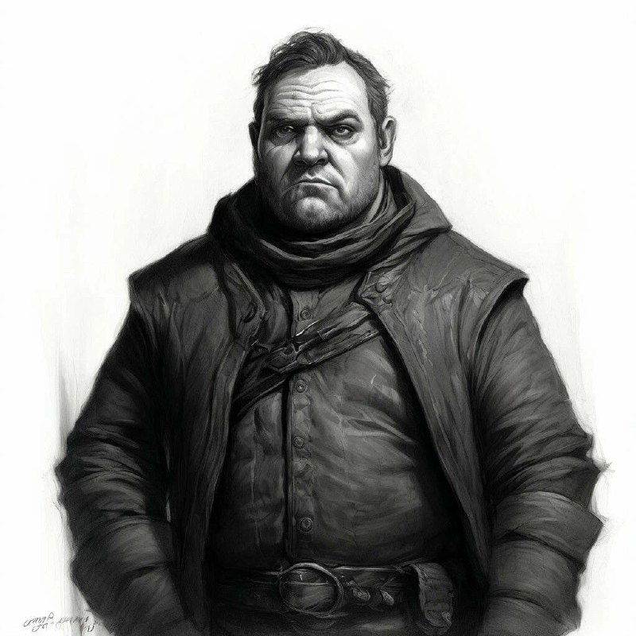
Мне опять снился кошмар. Возможно, это просто мои воспоминания, но сон как всегда слишком сумбурен, всё то же осуждение матери, насмешки сестер, боль, чувство беспомощности и никчемности, всё смешивается в один большой водоворот. В котором я тону как в вязком болоте, и чем сильнее я пытаюсь выбраться, тем глубже и сильнее меня засасывает…
Но среди всего этого хаоса я периодически ощущаю на себе тяжелый взгляд. Её взгляд. Она как якорь, помогающий не раствориться в урагане сна. Мне это не нравится. Ты теперь не нужна мне, как и я была не нужна тебе, стерва.
Надо бы уже оставить прошло в прошлом. Устала от этих снов.
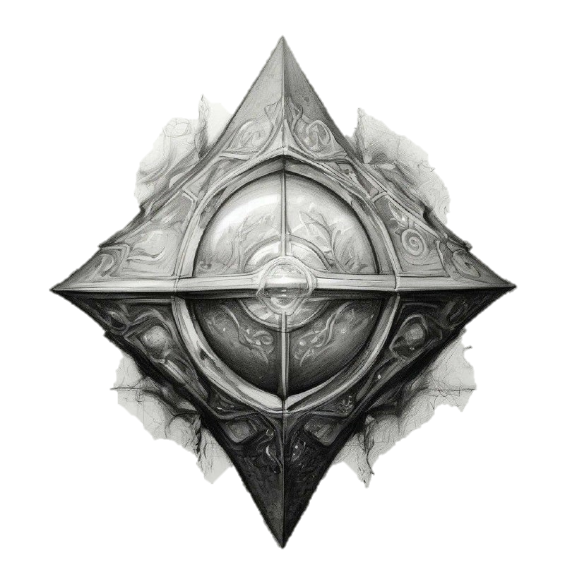
Я встретила в таверне подозрительного типа. Было очевидно, что я не местная (здесь не часто можно встретить дроу), но он всё равно подсел ко мне. Я облапошила его на 10 золотых играя в кости, он конечно пытался жульничать, но я оказалась более ловкой, и это его почему-то обрадовало.
Ларс сказал, что с моими навыками можно заработать куда больше, чем 10 золотых у случайного пьяницы и предложил работу.
До этого я крала только для себя, что ж если эти вещи не нужны мне, то их можно украсть и для других, за щедрое вознаграждение, разумеется. Как говорит Ларс, лучший наёмник тот, который не задает вопросов.
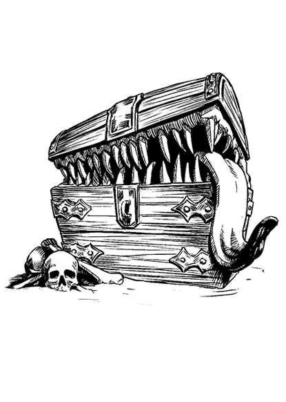
Первый заказ оказался на удивление простым. Всего лишь проследить за гномом, выяснить где он хранит свои ценности и вскрыть сейф, пока он предаётся утехам со своей женой в соседней комнате. Непонятный магический артефакт. Магия меня не любит и эти чувства у нас с ней взаимны. Даже вникать не хочу кому он нужен и что делает. Я постепенно вливаюсь в преступный мир и, кажется, именно здесь моё место.
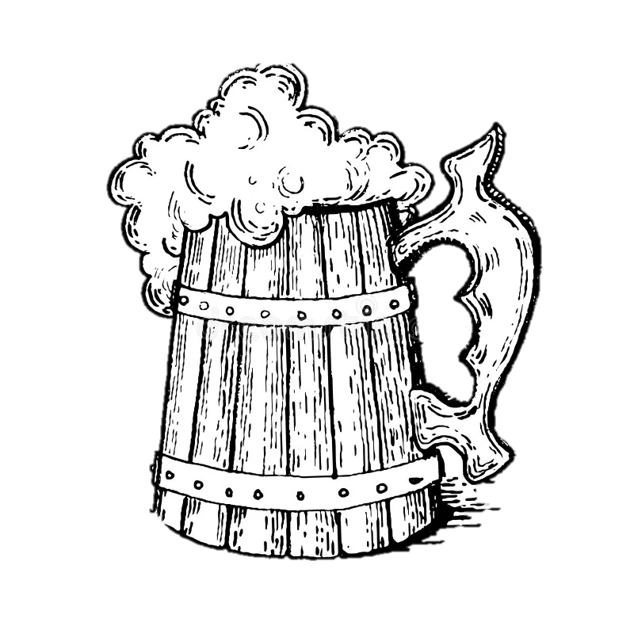
Впервые встретила мимика. Мерзкая тварь. Убить конечно убила, но настроение он мне подпортил, ещё и плащ продырямил и руки теперь в слизи. Фу.
Пометка на будущее: не доверять даже предметам. Надеюсь в золотые моенты они не превращаются. Моё сердце не выдержит такого предательства. С монетками у нас настоящая любовь (наконец-то начала понимать значение слова!) и вообще всё серьезно!
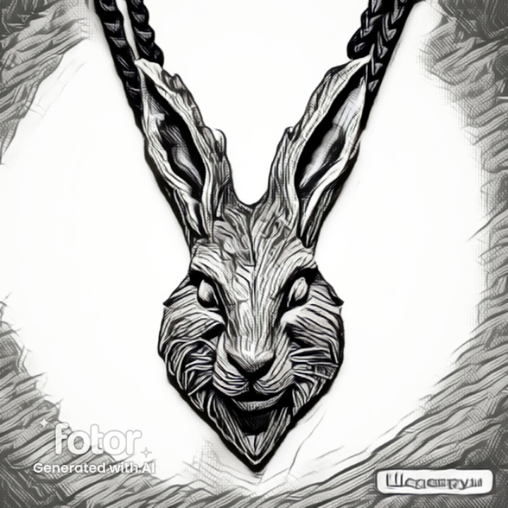
Пометка на будущее: НИКОГДА НЕ ПЕЙ С ДВАРФАМИ!
Необычайно одаренная раса в плане выпивки. Казалось бы обычный спор кто кого перепьёт, но уже после 5 кружки я поняла что проигрываю, а после 6 мне стало всё равно. И лучше бы я не помнила что было после 8. Успех, что я никого не прирезала (хотя подрезала пару кошельков) и можно задержаться в этом городе подольше.
Это пробуждение можно официально считать худшим из всех что были у меня на поверхности. Это похмелье может сравниться с родными пытками по неприятности ощущений.
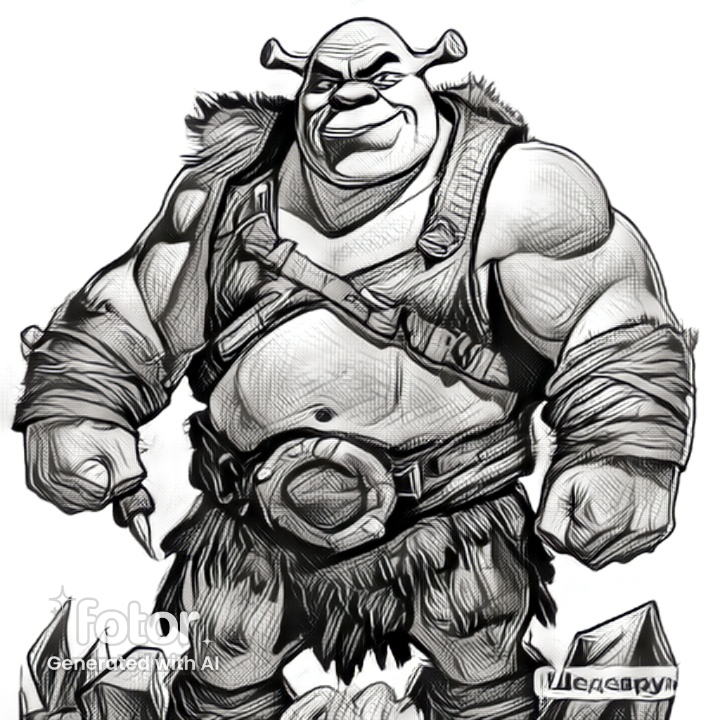
Я хотела всего лишь сыграть с тупым полуорком (редко их встречаю, но все как один умом не блещут) в пару игр и развести его на деньги, и всё шло просто замечательно ровно до момента когда я заметила у него такую же подвеску в виде головы зайца. За 8 лет ни разу не встретила существо похожее на то, что вручило мне её. Ещё и дварф вмешался, а как гласит моё золотое правило с дварфми в баре лучше вообще не взаимодействовать! На нем тоже подвеска… Она нас связывает? Кажется пришло время наконец выяснить что это и для чего…
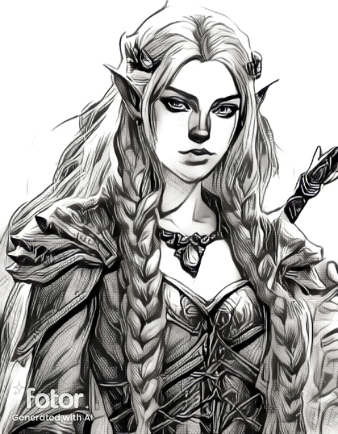
Странная собралась компания, они все мне не особо нравятся.
Барундур жрец и исходя из моего опыта они все двинутые фанатики. Пусть даже он поклоняется другому божеству и пока ведет себя без странностей, каждый раз когда взгляд цепляется за его религиозную символику, вспоминаю о доме. Неприятно… Из плюсов в нем только жзненный опыт на поверхности, постараюсь перенять как можно больше знаний, чтобы быстрее адаптироваться и понять мир поверхности.
Шкрек сильный, большой, тупой. На этом плюсы пожалуй заканчиваются. Вроде безобидный, но не понимаю что в его голове и чем он думает, лучше не ослаблять бдительность и всегда держаться за его спиной. Можно использовать как щит, да и самой нанести удар со спины намного проще. Лишен всякой красоты и изящества. Просто варвар.
Зираэлла самая настораживающая. Если она сама не знает кто она, я её тем более понять не смогу. Возможно дело в том, что она тоже эльф, но её фигура, красота, белизна волос… Напоминает о родственниках, которых я бы вовсе хотела забыть.
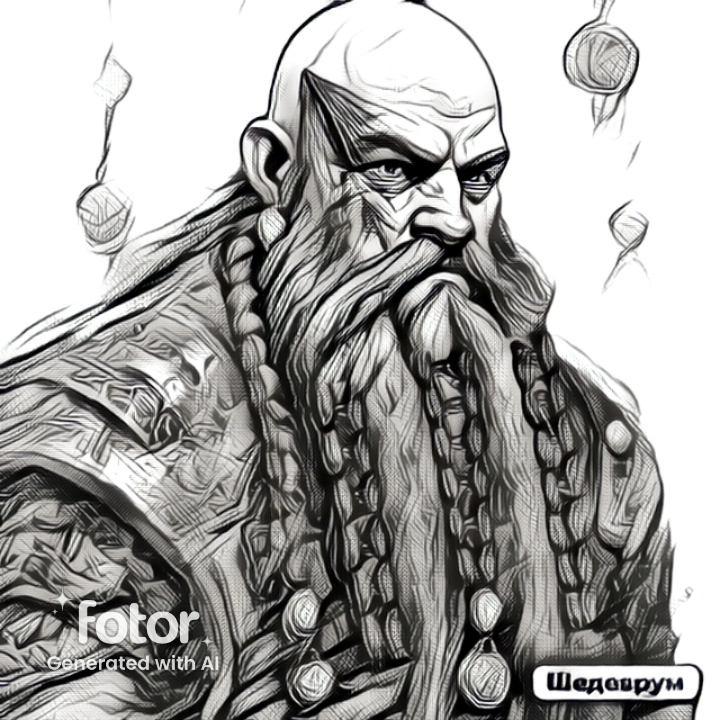
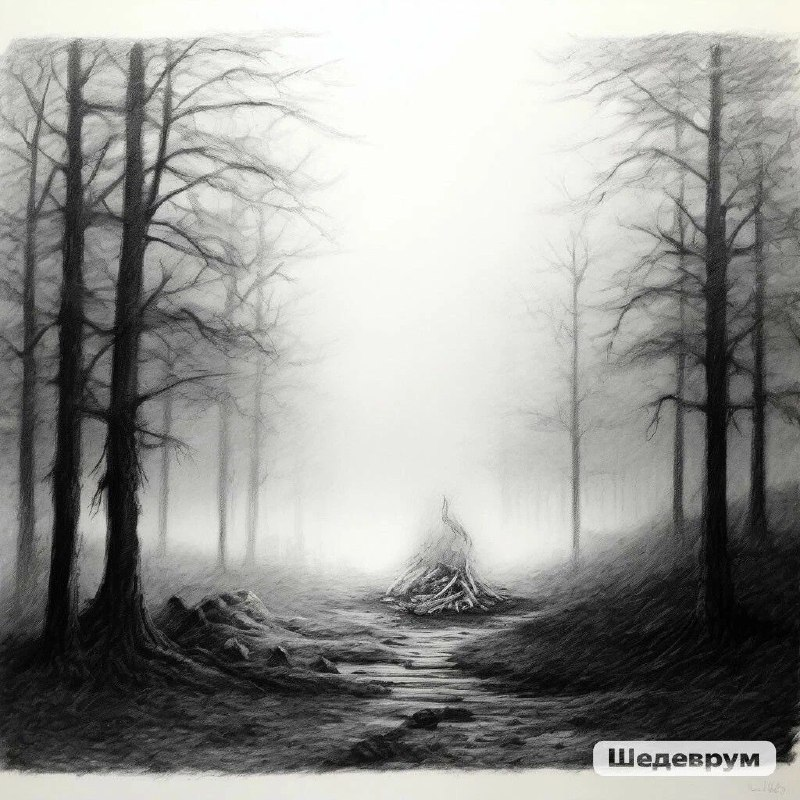
Мы уже какое-то время путешествуем вместе и они мне по прежнему не нравятся, но почему-то рядом с ними возникает странное чувство спокойствия и уюта. Приходится напоминать себе, что нельзя расслабляться и терять бдительность.
Со Шкреком временами весело, пусть он и та ещё страхолюдина. Бурундур постоянно ругается и отвешивает подзатыльники. Почему нельзя просто делать всё что хочется? Прав ведь сильнейший! А я ПОКА проигрываю… Но я уже привыкла к этому. ВОЗМОЖНО! ИНОГДА! Я всё таки буду прислушиваться к его ворчанию. НО! Это вовсе не значит что я его слушаюсь! Зираэллу всё ещё не понимаю и сторонюсь.
Мы во что-то вляпались, странный туман-телепорт, голые оборотни в лесу, говорящая нежить, шарлатаны с веселыми песенками (жаль не добили их) ещё и стремный чел нас поприветствовал. Он ловки и это очень плохо. Пугающий настораживающий тип. Тут творится какая-то дичь и мне это не нраивтся. Хочу свалить отсюда поскорее.
Унылая деревня и жители. В баре немноголюдно, бармен Арик пришибленый, зато нашла место для ночлега.
Дом большой, но обшапрпаный, всё пустое, заколоченное, снаржи видно следы от нападений. Бедность чувствуется в каждом углу, напервый вщгляд даже взять нечего. Ещё и труп лежит благоухает в цветочках… Не понимаю их желание предать тело умершего земле.
Шкреку прглянулась Ирина, этот тупоголовый начал при всех ломиться в её комнату, интеллект у него если и присутствует, то явно отрицательный, мог же просто попросить вскрыть дверь ночью, когда все лягут спать, ради такого шоу, я бы даже помогла, но теперь в этом и смысла нет, дверь забаррикодирована.
Нашла дневник путешественника, описанные события слишком сильно напоминают то, что произошло с нами, и судя по всему владелец уже мертв. Пршиво. Надо будет поискть вырванные страницы.
Шкрек решил поспать с Исмарком, конечно не шоу с Ириной, но тоже забавно. Зафиксировала этот момент веревкой, чтобы утром остальные тоже посмеялись.
Влетело от деда.
Решитли прогуляться по деревне. Залезли в пустующий дом, чуть не получиди пизды от крыс. Мерзкие волосатые твари. Нашла музыкальную шкатулку, мелодия напоминает о раннем детсве, когда всё было хорошо и я была хорошей, ну и деньги. Деньги это всегда хорошо!
В церкви нашла подвал со станными звуками. Оказалось священник запер своего обращенного сына. Хотели его освободить и поэксплуатировать, Зираэлла даже дала у себя соснуть крови, а этот смертник захотел укусить МЕНЯ! Кол тебе в сердце, говрюк сосущий! Ну… Хотя бы вампирские слабости узнали: текущая вода, кол в сердце и солнечный свет. С последним тут напряженка, в реку вампир сам не пойдет, а кол всего-лишь порализует. Забрала бы тело на опыты, чтобы выяснить что его убъёт, но на шум пришел священник с тупицей и дедом… Спалила деду отсос Зариэллы, ей влетело, а я увернулась! Успех!
Посмотрели на бедных. Ничего ценного, что неудивительно.
Нашли брата Шкрека, такой же тупой и уродливый как наш зеленый друг. Скряг упомянул клад у реки… Такое я люблю!
Нашла клад, но трогать эту коробочку боязно… Поажу остальным, если их не убъет, то можно прикарманить содержимое. Обменялась любезностями с воронами. Ненавижу эту пернатую мерзость. Нужно вернуться к остальным, пока не заметили, что я убежала.
Дневник обрывается...
Продолжение следует